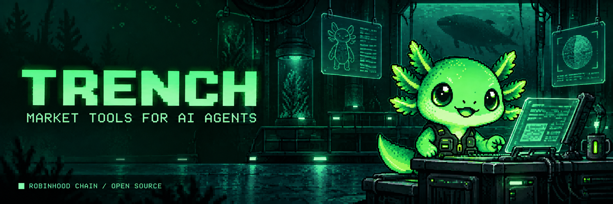

inspect_tokenRead observed pools, liquidity, volume and market context.
token addressROBINHOOD CHAIN / MARKET TOOLS FOR AI AGENTS
TRENCH reads token pools and models how your position size changes exit pressure. Your AI gets the data, the calculation and the limits — not just a confident answer.
No login. No wallet. Live token analysis + a separate synthetic demo.
01 / OBSERVE
Inspect observed token pools, liquidity and volume before you model a position.
TRENCH / ROBINHOOD CHAIN
| Observed UTC | Token | Contract | Pool liquidity | Action |
|---|
DexScreener search sample: Robinhood + WETH, not all launches or a recommendation. New rows reveal at one per second; snapshots refresh every 30 seconds. Times are fetch times, not launch times. Cached data is explicitly marked and expires after five minutes. Analyze runs a $1,000 pressure model; Agent prepares a prompt for your connected MCP client. No trades.
THE AI CONNECTION
MCP connects a compatible AI client to these five read-only tools. Live requests run through the hosted server, from either the browser terminal or your MCP client.
inspect_tokenRead observed pools, liquidity, volume and market context.
token addresssimulate_exitModel one USD position against the highest-liquidity observed pool.
token + sizeUsdcompare_exit_sizesCompare up to eight sizes using one fetched pool observation.
token + sizesUsd[]chain_healthRead chain ID, latest block and RPC round-trip latency.
no inputexplain_exit_signalReturn a deterministic explanation with evidence and limits.
token + sizeUsdCLEAR BOUNDARIES
Observed pool data, size-aware pressure estimates and grade reasons. Public sources and code you can inspect.
Trade execution, wallet balance lookup, guaranteed proceeds, a token safety score or complete Uniswap v4 simulation.
Pool-provider data and RPC blocks are separate observations. Missing numeric provider fields may normalize to zero. An observation timestamp does not prove an atomic snapshot.
Read the model assumptions в†—
CONNECT OVER HTTPS
Connect an HTTP-compatible MCP client using this public endpoint. No local install, account or wallet required. Local stdio setup is also available.
Open setup instructions в†—